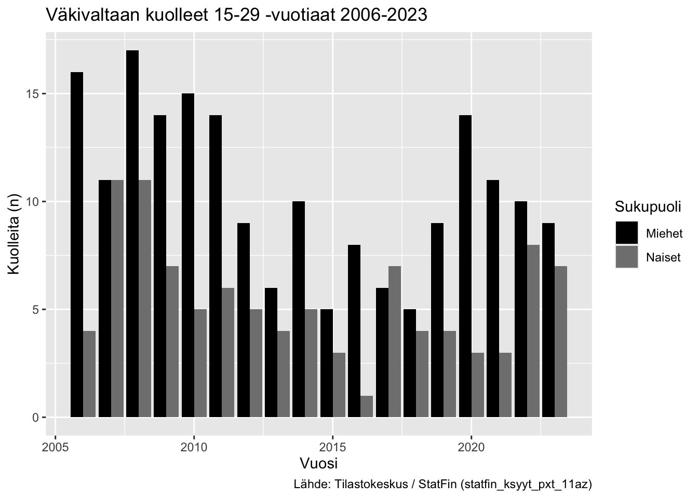
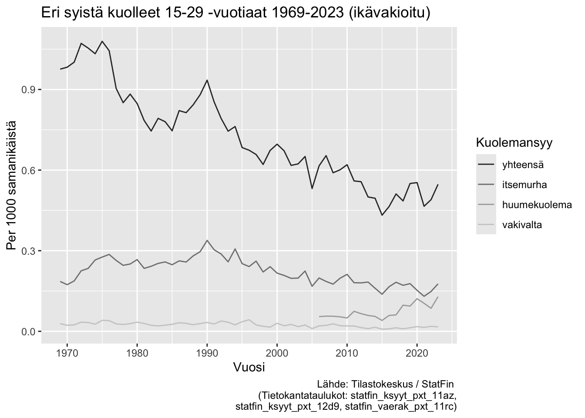

library(pxweb)
library(ggplot2)
library(dplyr)
library(tidyr)
library(janitor)
library(patchwork)YP YD-visualisoinnit
0. Relevanttien pakettien lataaminen
Tilastotietojen lataamisessa Tilastokeskuksen StatFin-tietokannasta käytetään pxweb-pakettia. Paketti mahdollistaa hakujen tekemisen tekstipohjaisesta käyttöliittymästä, jolloin haut ovat tallennettavissa, helposti toistettavissa ja muokattavissa suoraan R:stä. pxweb-paketti toimii monien eri pxweb-tietokantojen kanssa eri maissa.
Datan käsittelyyn (data wrangling) käytetään tidyverseen kuuluvia ggplot2-, dplyr- ja tidyr-paketteja.
Datasettien nimien siivoamiseen käytetään janitor-pakettia.
Kuvien yhdistämiseksi paneelikuviksi hyödynnetään patchwork-pakettia.
0.1 Datan hakeminen
pxweb_query_list <-
list("Tilaston peruskuolemansyy (aikasarjaluokitus)"=c("SSS", "50","51"),
"Ikä"=c("15-19","20-24","25-29"),
"Sukupuoli"=c("SSS","1","2"),
"Vuosi"=as.character(1969:2023),
"Tiedot"=c("ksyylkm"))
px_data <-
pxweb_get(url = "https://statfin.stat.fi/PXWeb/api/v1/fi/StatFin/ksyyt/statfin_ksyyt_pxt_11az.px",
query = pxweb_query_list)
statfin_ksyyt_pxt_11az <- as.data.frame(px_data,
column.name.type = "text",
variable.value.type = "text")
pxweb_query_list <-
list("Tilaston peruskuolemansyy (ICD-10, 3-merkkitaso)"=c("F11","F12", "F14",
"F15", "F16", "F19",
"X41", "X42", "X44",
"X61", "X62", "X64",
"Y11", "Y12", "Y14"),
"Ikä"=c("15-19","20-24","25-29"),
"Sukupuoli"=c("SSS","1","2"),
"Vuosi"=as.character(1998:2023),
"Tiedot"=c("ksyylkm"))
# Huumausainekuolemat ICD-10 -koodeilla, ilman itsemurhia
pxweb_query_list <-
list("Tilaston peruskuolemansyy (ICD-10, 3-merkkitaso)"=c("F11","F12", "F14",
"F15", "F16", "F19",
"X41", "X42", "X44",
"Y11", "Y12", "Y14"),
"Ikä"=c("15-19","20-24","25-29"),
"Sukupuoli"=c("SSS","1","2"),
"Vuosi"=as.character(1998:2023),
"Tiedot"=c("ksyylkm"))
px_data <-
pxweb_get(url = "https://statfin.stat.fi/PXWeb/api/v1/fi/StatFin/ksyyt/statfin_ksyyt_pxt_11be.px",
query = pxweb_query_list)
statfin_ksyyt_pxt_11be <- as.data.frame(px_data,
column.name.type = "text",
variable.value.type = "text")
pxweb_query_list <-
list("Huume (B-luokitus)"=c("SSS"),
"Ikä"=c("15-19","20-24","25-29"),
"Sukupuoli"=c("SSS","1","2"),
"Vuosi"=as.character(2006:2023),
"Tiedot"=c("ksyylkm15"))
px_data <-
pxweb_get(url = "https://statfin.stat.fi/PXWeb/api/v1/fi/StatFin/ksyyt/statfin_ksyyt_pxt_12d9.px",
query = pxweb_query_list)
statfin_ksyyt_pxt_12d9 <- as.data.frame(px_data,
column.name.type = "text",
variable.value.type = "text")Keskiväkiluku
# PXWEB query
pxweb_query_list <-
list("Alue"="SSS",
"Vuosi"=as.character(1981:2024),
"Sukupuoli"=c("SSS","1","2"),
"Ikä"=paste0("0", 15:29),
"Tiedot"=c("keskiv"))
# Download data
px_data <-
pxweb_get(url = "https://statfin.stat.fi/PXWeb/api/v1/fi/StatFin/vaerak/statfin_vaerak_pxt_11s1.px",
query = pxweb_query_list)
# Convert to data.frame
statfin_vaerak_pxt_11s1 <- as.data.frame(px_data,
column.name.type = "text",
variable.value.type = "text")Filtteröinti
janitor-paketin clean_names()-funktiolla muutetaan suomenkieliset muuttujanimet helpommin käsiteltäviksi ASCII-nimiksi, joissa poistetaan isot kirjaimet, välilyönnit korvataan _-merkillä, ääkköset poistetaan ym.
Muodostetaan uusi muuttuja “kuolemansyy” jota voidaan käyttää eri kuolemansyiden lukujen ryhmittelyyn visualisoinneissa.
statfin_ksyyt_pxt_11az <- statfin_ksyyt_pxt_11az %>%
janitor::clean_names()
itsemurhat_vakivalta <- statfin_ksyyt_pxt_11az %>%
# filter(sukupuoli %in% c("Miehet", "Naiset"), as.numeric(vuosi) >= 2006) %>%
# filter(!(tilaston_peruskuolemansyy_aikasarjaluokitus %in% "00-54 Yhteensä")) %>%
group_by(tilaston_peruskuolemansyy_aikasarjaluokitus, vuosi, ika, sukupuoli) %>%
summarize(kuolleet_06_23 = sum(kuolleet)) %>%
mutate(kuolemansyy = case_when(
tilaston_peruskuolemansyy_aikasarjaluokitus == "50 Itsemurhat (X60-X84, Y870)" ~ "itsemurha",
tilaston_peruskuolemansyy_aikasarjaluokitus == "51 Murha, tappo tai muu tahallinen pahoinpitely (X85-Y09, Y871)" ~ "vakivalta",
.default = "muut"
)) %>%
ungroup() %>%
select(vuosi, ika, sukupuoli, kuolleet_06_23, kuolemansyy)
statfin_ksyyt_pxt_12d9 <- statfin_ksyyt_pxt_12d9 %>%
janitor::clean_names()
huumekuolemat <- statfin_ksyyt_pxt_12d9 %>%
# filter(sukupuoli %in% c("Miehet", "Naiset"), as.numeric(vuosi) >= 2006) %>%
group_by(vuosi, ika, sukupuoli) %>%
summarize(kuolleet_06_23 = sum(huumeisiin_kuolleet_b_luokitus, na.rm = TRUE)) %>%
ungroup() %>%
mutate(kuolemansyy = "huumekuolema")1. 3x pylväsdiagrammi yd-kuolemansyyn (itsemurhat, huumeet, väkivalta)
Filtteröinti
itsemurhat_ikaryhmat <- itsemurhat_vakivalta %>%
filter(as.numeric(vuosi) >= 2006) %>%
filter(kuolemansyy == "itsemurha") %>%
filter(sukupuoli == "Yhteensä")
vakivalta_ikaryhmat <- itsemurhat_vakivalta %>%
filter(as.numeric(vuosi) >= 2006) %>%
filter(kuolemansyy == "vakivalta") %>%
filter(sukupuoli == "Yhteensä")
huumekuolemat_ikaryhmat <- huumekuolemat %>%
filter(as.numeric(vuosi) >= 2006) %>%
filter(sukupuoli == "Yhteensä")
itsemurhat_ikaryhmat_total <- itsemurhat_ikaryhmat %>%
group_by(vuosi, sukupuoli, kuolemansyy) %>%
summarize(kuolleet_06_23 = sum(kuolleet_06_23)) %>%
mutate(ika = "15 - 29 (Yhteensä)") %>%
select(vuosi, ika, sukupuoli, kuolleet_06_23, kuolemansyy)
vakivalta_ikaryhmat_total <- vakivalta_ikaryhmat %>%
group_by(vuosi, sukupuoli, kuolemansyy) %>%
summarize(kuolleet_06_23 = sum(kuolleet_06_23)) %>%
mutate(ika = "15 - 29 (Yhteensä)") %>%
select(vuosi, ika, sukupuoli, kuolleet_06_23, kuolemansyy)
huumekuolemat_ikaryhmat_total <- huumekuolemat_ikaryhmat %>%
group_by(vuosi, sukupuoli, kuolemansyy) %>%
summarize(kuolleet_06_23 = sum(kuolleet_06_23)) %>%
mutate(ika = "15 - 29 (Yhteensä)") %>%
select(vuosi, ika, sukupuoli, kuolleet_06_23, kuolemansyy)Muutetaan ika-muuttujan character-arvot faktoreiksi, jolloin voidaan määritellä manuaalisesti niiden järjestys. Normaalisti muuttujat visualisoitaisiin aakkosjärjestyksessä (alfanumeerisessa järjestyksessä), jolloin numerot tulisivat ennen tekstimuuttujia. Haluamme kuitenkin tässä (?), että “Yhteensä” on ennen numeroita.
itsemurhat_ikaryhmat_2 <- rbind(itsemurhat_ikaryhmat, itsemurhat_ikaryhmat_total) %>%
mutate(ika = factor(ika, levels=c("15 - 29 (Yhteensä)", "15 - 19", "20 - 24", "25 - 29")))
vakivalta_ikaryhmat_2 <- rbind(vakivalta_ikaryhmat, vakivalta_ikaryhmat_total) %>%
mutate(ika = factor(ika, levels=c("15 - 29 (Yhteensä)", "15 - 19", "20 - 24", "25 - 29")))
huumekuolemat_ikaryhmat_2 <- rbind(huumekuolemat_ikaryhmat, huumekuolemat_ikaryhmat_total) %>%
mutate(ika = factor(ika, levels=c("15 - 29 (Yhteensä)", "15 - 19", "20 - 24", "25 - 29")))Visualisointi (dodge)
Tässä visualisoinnissa esitetään erikseen eri kuolinsyiden Yhteensä-määrä ja erilliset kuolinsyyt omina palkkeinaan.
Hyödyntämällä patchwork-kirjastoa saamme yhdistettyä useita kuvioita yhteen.
ggplot() +
# geom_bar(data = itsemurhat_ikaryhmat_total, aes(y = total, x=as.numeric(vuosi)), stat="identity", position="dodge") +
geom_bar(data = itsemurhat_ikaryhmat_2, aes(fill = ika, y=kuolleet_06_23, x=as.numeric(vuosi)), position="dodge", stat="identity") +
labs(title = "Itsemurhiin kuolleet 15-29 -vuotiaat 2006-2023",
caption = "Lähde: Tilastokeskus / StatFin (statfin_ksyyt_pxt_11az)",
x = "Vuosi",
y = "Kuolleita (n)",
fill = "Ikäryhmä") +
scale_fill_grey(start = 0.7, end = 0.15)
ggplot(vakivalta_ikaryhmat_2, aes(fill = ika, y=kuolleet_06_23, x=as.numeric(vuosi))) +
geom_bar(position="dodge", stat="identity") +
labs(title = "Väkivaltaan kuolleet 15-29 -vuotiaat 2006-2023",
caption = "Lähde: Tilastokeskus / StatFin (statfin_ksyyt_pxt_11az)",
x = "Vuosi",
y = "Kuolleita (n)",
fill = "Ikäryhmä") +
scale_fill_grey(start = 0.7, end = 0.15)
ggplot(huumekuolemat_ikaryhmat_2, aes(fill = ika, y=kuolleet_06_23, x=as.numeric(vuosi))) +
geom_bar(position="dodge", stat="identity") +
labs(title = "Huumeisiin kuolleet 15-29 -vuotiaat 2006-2023",
caption = "Lähde: Tilastokeskus / StatFin (statfin_ksyyt_pxt_12d9)",
x = "Vuosi",
y = "Kuolleita (n)",
fill = "Ikäryhmä") +
scale_fill_grey(start = 0.7, end = 0.15)
Visualisointi (patchwork)
Hyödyntämällä patchwork-kirjastoa saamme yhdistettyä useita kuvioita yhteen.
p1 <- ggplot() +
geom_bar(data = itsemurhat_ikaryhmat_2, aes(fill = ika, y=kuolleet_06_23, x=as.numeric(vuosi)), position="dodge", stat="identity") +
ylim(0, 200) +
scale_fill_grey(start = 0.7, end = 0.15) +
labs(title = "Itsemurhat", x = "Vuosi", y = "Kuolleet (n)", fill = "Ikäryhmä")
p2 <- ggplot(vakivalta_ikaryhmat_2, aes(fill = ika, y=kuolleet_06_23, x=as.numeric(vuosi))) +
geom_bar(position="dodge", stat="identity") +
ylim(0, 200) +
scale_fill_grey(start = 0.7, end = 0.15) +
labs(title = "Väkivalta", x = "Vuosi", y = "Kuolleet (n)", fill = "Ikäryhmä")
p3 <- ggplot(huumekuolemat_ikaryhmat_2, aes(fill = ika, y=kuolleet_06_23, x=as.numeric(vuosi))) +
geom_bar(position="dodge", stat="identity") +
ylim(0, 200) +
scale_fill_grey(start = 0.7, end = 0.15) +
labs(title = "Huumeet", x = "Vuosi", y = "Kuolleet (n)", fill = "Ikäryhmä")
p1 + p2 + p3 + plot_layout(ncol = 2, guides = "collect", axis_titles = "collect") & theme(legend.position = "bottom")
Visualisointi (stacked)
Tässä visualisoinnissa YD-kuolemien kokonaismäärä näkyy pinoamalla erilliset kuolinsyyt yhdeksi palkiksi.
ggplot() +
# geom_bar(data = itsemurhat_ikaryhmat_total, aes(y = total, x=as.numeric(vuosi)), stat="identity", position="dodge") +
geom_bar(data = itsemurhat_ikaryhmat, aes(fill = ika, y=kuolleet_06_23, x=as.numeric(vuosi)), position="stack", stat="identity") +
labs(title = "Itsemurhiin kuolleet 15-29 -vuotiaat 2006-2023",
caption = "Lähde: Tilastokeskus / StatFin (statfin_ksyyt_pxt_11az)",
x = "Vuosi",
y = "Kuolleita (n)",
fill = "Ikäryhmä") +
scale_fill_grey(start = 0.75, end = 0.25)ggplot(vakivalta_ikaryhmat, aes(fill = ika, y=kuolleet_06_23, x=as.numeric(vuosi))) +
geom_bar(position="stack", stat="identity") +
labs(title = "Väkivaltaan kuolleet 15-29 -vuotiaat 2006-2023",
caption = "Lähde: Tilastokeskus / StatFin (statfin_ksyyt_pxt_11az)",
x = "Vuosi",
y = "Kuolleita (n)",
fill = "Ikäryhmä") +
scale_fill_grey(start = 0.75, end = 0.25)ggplot(huumekuolemat_ikaryhmat, aes(fill = ika, y=kuolleet_06_23, x=as.numeric(vuosi))) +
geom_bar(position="stack", stat="identity") +
labs(title = "Huumeisiin kuolleet 15-29 -vuotiaat 2006-2023",
caption = "Lähde: Tilastokeskus / StatFin (statfin_ksyyt_pxt_12d9)",
x = "Vuosi",
y = "Kuolleita (n)",
fill = "Ikäryhmä") +
scale_fill_grey(start = 0.75, end = 0.25)
2. Pylväsdiagrammi, yd-kuolemansyyt sukupuolittain 2006-2024, absoluuttiset luvut
Filtteröinti
itsemurhat_sp <- itsemurhat_vakivalta %>%
filter(kuolemansyy == "itsemurha") %>%
filter(as.numeric(vuosi) >= 2006) %>%
filter(sukupuoli %in% c("Miehet", "Naiset")) %>%
group_by(vuosi, sukupuoli) %>%
summarize(kuolleet_06_23_sp = sum(kuolleet_06_23, na.rm = TRUE)) %>%
ungroup()
vakivalta_sp <- itsemurhat_vakivalta %>%
filter(kuolemansyy == "vakivalta") %>%
filter(as.numeric(vuosi) >= 2006) %>%
filter(sukupuoli %in% c("Miehet", "Naiset")) %>%
group_by(vuosi, sukupuoli) %>%
summarize(kuolleet_06_23_sp = sum(kuolleet_06_23, na.rm = TRUE)) %>%
ungroup()
huumekuolemat_sp <- huumekuolemat %>%
filter(as.numeric(vuosi) >= 2006) %>%
filter(sukupuoli %in% c("Miehet", "Naiset")) %>%
group_by(vuosi, sukupuoli) %>%
summarize(kuolleet_06_23_sp = sum(kuolleet_06_23, na.rm = TRUE)) %>%
ungroup()Visualisointi
ggplot(itsemurhat_sp, aes(fill = sukupuoli, y=kuolleet_06_23_sp, x=as.numeric(vuosi))) +
geom_bar(position="dodge", stat="identity") +
labs(title = "Itsemurhiin kuolleet 15-29 -vuotiaat 2006-2023",
caption = "Lähde: Tilastokeskus / StatFin (statfin_ksyyt_pxt_11az)",
x = "Vuosi",
y = "Kuolleita (n)",
fill = "Sukupuoli") +
scale_fill_grey(start = 0, end = 0.5)
ggplot(vakivalta_sp, aes(fill = sukupuoli, y=kuolleet_06_23_sp, x=as.numeric(vuosi))) +
geom_bar(position="dodge", stat="identity") +
labs(title = "Väkivaltaan kuolleet 15-29 -vuotiaat 2006-2023",
caption = "Lähde: Tilastokeskus / StatFin (statfin_ksyyt_pxt_11az)",
x = "Vuosi",
y = "Kuolleita (n)",
fill = "Sukupuoli") +
scale_fill_grey(start = 0, end = 0.5)
ggplot(huumekuolemat_sp, aes(fill = sukupuoli, y=kuolleet_06_23_sp, x=as.numeric(vuosi))) +
geom_bar(position="dodge", stat="identity") +
labs(title = "Huumeisiin kuolleet 15-29 -vuotiaat 2006-2023",
caption = "Lähde: Tilastokeskus / StatFin (statfin_ksyyt_pxt_12d9)",
x = "Vuosi",
y = "Kuolleita (n)",
fill = "Sukupuoli") +
scale_fill_grey(start = 0, end = 0.5)
Taulukko
Datan siivous
itsemurhat_yht <- itsemurhat_vakivalta %>%
filter(kuolemansyy == "itsemurha") %>%
filter(as.numeric(vuosi) >= 2006) %>%
filter(sukupuoli %in% c("Miehet", "Naiset")) %>%
group_by(vuosi, sukupuoli, kuolemansyy) %>%
summarize(kuolleet_06_23_yht = sum(kuolleet_06_23, na.rm = TRUE)) %>%
ungroup()
vakivalta_yht <- itsemurhat_vakivalta %>%
filter(kuolemansyy == "vakivalta") %>%
filter(as.numeric(vuosi) >= 2006) %>%
filter(sukupuoli %in% c("Miehet", "Naiset")) %>%
group_by(vuosi, sukupuoli, kuolemansyy) %>%
summarize(kuolleet_06_23_yht = sum(kuolleet_06_23, na.rm = TRUE)) %>%
ungroup()
huumekuolemat_yht <- huumekuolemat %>%
filter(sukupuoli %in% c("Miehet", "Naiset")) %>%
filter(as.numeric(vuosi) >= 2006) %>%
group_by(vuosi, sukupuoli, kuolemansyy) %>%
summarize(kuolleet_06_23_yht = sum(kuolleet_06_23, na.rm = TRUE)) %>%
ungroup()
yd_kuolemat_kaikki <- rbind(itsemurhat_yht, vakivalta_yht, huumekuolemat_yht) %>%
tidyr::pivot_wider(names_from = c(kuolemansyy, sukupuoli),
values_from = kuolleet_06_23_yht)Taulukon printtaus
yd_kuolemat_kaikki %>%
rename(itsem_m = "itsemurha_Miehet", itsem_n = "itsemurha_Naiset",
vakiv_m = "vakivalta_Miehet", vakiv_n = "vakivalta_Naiset",
huume_m = "huumekuolema_Miehet", huume_n = "huumekuolema_Naiset")# A tibble: 18 × 7
vuosi itsem_m itsem_n vakiv_m vakiv_n huume_m huume_n
<chr> <dbl> <dbl> <dbl> <dbl> <dbl> <dbl>
1 2006 158 38 16 4 47 7
2 2007 141 43 11 11 47 9
3 2008 135 40 17 11 45 11
4 2009 149 49 14 7 38 16
5 2010 164 49 15 5 38 12
6 2011 143 39 14 6 60 15
7 2012 135 46 9 5 52 14
8 2013 135 48 6 4 44 15
9 2014 124 35 10 5 46 9
10 2015 108 28 5 3 35 5
11 2016 110 53 8 1 50 8
12 2017 134 45 6 7 48 12
13 2018 122 45 5 4 72 23
14 2019 129 43 9 4 65 26
15 2020 98 49 14 3 98 19
16 2021 82 43 11 3 77 23
17 2022 106 36 10 8 61 21
18 2023 112 58 9 7 101 233. Pylväsdiagrammi, jossa 15-29-vuotiaiden nuorten kuolemat 2006-2024
Filtteröinti
itsemurhat_yht <- itsemurhat_vakivalta %>%
filter(kuolemansyy == "itsemurha") %>%
filter(as.numeric(vuosi) >= 2006) %>%
filter(sukupuoli %in% c("Yhteensä")) %>%
group_by(vuosi, sukupuoli, kuolemansyy) %>%
summarize(kuolleet_06_23_yht = sum(kuolleet_06_23, na.rm = TRUE)) %>%
ungroup()
vakivalta_yht <- itsemurhat_vakivalta %>%
filter(kuolemansyy == "vakivalta") %>%
filter(as.numeric(vuosi) >= 2006) %>%
filter(sukupuoli %in% c("Yhteensä")) %>%
group_by(vuosi, sukupuoli, kuolemansyy) %>%
summarize(kuolleet_06_23_yht = sum(kuolleet_06_23, na.rm = TRUE)) %>%
ungroup()
kaikki_muut_yht <- itsemurhat_vakivalta %>%
filter(kuolemansyy == "muut") %>%
filter(as.numeric(vuosi) >= 2006) %>%
filter(sukupuoli %in% "Yhteensä") %>%
group_by(vuosi, sukupuoli, kuolemansyy) %>%
summarize(kuolleet_06_23_yht = sum(kuolleet_06_23, na.rm = TRUE)) %>%
ungroup()
huumekuolemat_yht <- huumekuolemat %>%
filter(sukupuoli %in% c("Yhteensä")) %>%
filter(as.numeric(vuosi) >= 2006) %>%
group_by(vuosi, sukupuoli, kuolemansyy) %>%
summarize(kuolleet_06_23_yht = sum(kuolleet_06_23, na.rm = TRUE)) %>%
ungroup()
kaikki <- rbind(itsemurhat_yht, vakivalta_yht, huumekuolemat_yht, kaikki_muut_yht)
kaikki_wide <- kaikki %>%
pivot_wider(names_from = kuolemansyy, values_from = kuolleet_06_23_yht) %>%
mutate(muut = muut - itsemurha - vakivalta - huumekuolema)
kaikki_long <- kaikki_wide %>%
pivot_longer(!c(vuosi, sukupuoli), names_to = "kuolemansyy") %>%
mutate(kuolemansyy = factor(kuolemansyy, levels=c("huumekuolema", "vakivalta", "itsemurha", "muut")))Visualisointi
ggplot(kaikki_long, aes(fill = kuolemansyy, y=value, x=as.numeric(vuosi))) +
geom_bar(position="stack", stat="identity") +
labs(title = "Eri syistä kuolleet 15-29 -vuotiaat 2006-2023",
caption = "Lähde: Tilastokeskus / StatFin (statfin_ksyyt_pxt_11az, statfin_ksyyt_pxt_12d9)",
x = "Vuosi",
y = "Kuolleita (n)",
fill = "Kuolemansyy") +
scale_fill_grey()
4. Viivadiagrammi nuorten kuolemista 1970-2024, yd-kuolemansyyt ja kaikki kuolemansyyt.
Absoluuttiset lukuarvot
Filtteröinti
Verrattuna aiempiin vaiheisiin, tässä on pudotettu pois vuoden perusteella filtteröinti. Toisin sanottuna mukaan otetaan kaikki havainnot aineiston alkupisteestä asti. Huumekuolemat-aineisto alkaa vasta vuodesta 2006.
itsemurhat_yht_70 <- itsemurhat_vakivalta %>%
filter(kuolemansyy == "itsemurha") %>%
filter(sukupuoli %in% c("Yhteensä")) %>%
group_by(vuosi, sukupuoli, kuolemansyy) %>%
summarize(kuolleet_yht = sum(kuolleet_06_23, na.rm = TRUE)) %>%
ungroup()
vakivalta_yht_70 <- itsemurhat_vakivalta %>%
filter(kuolemansyy == "vakivalta") %>%
filter(sukupuoli %in% c("Yhteensä")) %>%
group_by(vuosi, sukupuoli, kuolemansyy) %>%
summarize(kuolleet_yht = sum(kuolleet_06_23, na.rm = TRUE)) %>%
ungroup()
kaikki_muut_yht_70 <- itsemurhat_vakivalta %>%
filter(kuolemansyy == "muut") %>%
filter(sukupuoli %in% "Yhteensä") %>%
mutate(kuolemansyy = "yhteensä") %>%
group_by(vuosi, sukupuoli, kuolemansyy) %>%
summarize(kuolleet_yht = sum(kuolleet_06_23, na.rm = TRUE)) %>%
ungroup()
huumekuolemat_yht_70 <- huumekuolemat %>%
filter(sukupuoli %in% c("Yhteensä")) %>%
group_by(vuosi, sukupuoli, kuolemansyy) %>%
summarize(kuolleet_yht = sum(kuolleet_06_23, na.rm = TRUE)) %>%
ungroup()
kaikki_70 <- rbind(itsemurhat_yht_70, vakivalta_yht_70, huumekuolemat_yht_70, kaikki_muut_yht_70) %>%
mutate(kuolemansyy = factor(kuolemansyy, levels=c("yhteensä", "itsemurha", "huumekuolema", "vakivalta")))
# kaikki_wide_70 <- kaikki_70 %>%
# pivot_wider(names_from = kuolemansyy, values_from = kuolleet_yht) %>%
# mutate(muut = muut - itsemurha - vakivalta - huumekuolema)
#
# kaikki_long_70 <- kaikki_wide_70 %>%
# pivot_longer(!c(vuosi, sukupuoli), names_to = "kuolemansyy")Visualisointi
ggplot(data = kaikki_70, aes(x = as.numeric(vuosi), y = kuolleet_yht, group = kuolemansyy)) +
geom_line(aes(color=kuolemansyy)) +
labs(title = "Eri syistä kuolleet 15-29 -vuotiaat 1969-2023",
caption = "Lähde: Tilastokeskus / StatFin (statfin_ksyyt_pxt_11az, statfin_ksyyt_pxt_12d9)",
x = "Vuosi",
y = "Kuolleita (n)",
colour = "Kuolemansyy") +
scale_color_grey()
Suhteutettuna ikäluokan kokoon
ASDR
Ikäryhmittäinen kuolleisuusluku (Age Specific Death Rate, ASDR) vastaa ikäryhmittäistä hedelmällisyyslukua niin hyvien kuin huonenkin ominaisuuksiensa osalta. Se on täsmällinen mittaluku, mutta se pilkkoo tiedon kuolleisuudesta niin moneen pieneen palaseen, että kokonaiskuvaa on vaikea saada. Esimerkiksi 25-29-vuotiaille ikäryhmittäinen kuolleisuusluku lasketaan seuraavanlaisessa kaavalla:
\[ ASDR = \frac{\text{25-29 vuotiaana kuolleet vuonna A}}{\text{25-29-vuotiaiden keskiväkiluku vuonna A}} \times 1000 \]
(Suomen väestö -teos)
Kategorisoidaan ensin 1 ikävuoden välein otetut keskiväkiluvut aiemmin käytettyihin kategorioihin 15 - 19, 20 - 24 ja 25-29.
statfin_vaerak_pxt_11s1 <- statfin_vaerak_pxt_11s1 %>%
janitor::clean_names()
keskivakiluvut <- statfin_vaerak_pxt_11s1 %>%
mutate(ikaryhma = case_when(
ika %in% as.character(15:19) ~ "15 - 19",
ika %in% as.character(20:24) ~ "20 - 24",
ika %in% as.character(25:29) ~ "25 - 29",
.default = "muut"
)) %>%
group_by(vuosi, sukupuoli, ikaryhma) %>%
summarize(keskivakiluku_ikaryhma = sum(keskivakiluku)) %>%
ungroup()
keskivakiluvut_15_29 <- statfin_vaerak_pxt_11s1 %>%
mutate(ikaryhma = "15 - 29") %>%
group_by(vuosi, sukupuoli, ikaryhma) %>%
summarize(keskivakiluku_ikaryhma = sum(keskivakiluku)) %>%
ungroup()Lasketaan sitten kuolleiden määrän ja keskiväkiluvun suhteesta saatava ASDR.
keskivakiluvut_15_29 <- keskivakiluvut_15_29 %>%
filter(sukupuoli == "Yhteensä") %>%
select(vuosi, keskivakiluku_ikaryhma)
kaikki_70_asdr <- left_join(kaikki_70, keskivakiluvut_15_29, by = join_by("vuosi" == "vuosi")) %>%
filter(as.numeric(vuosi) > 1981) %>%
mutate(asdr = (kuolleet_yht / keskivakiluku_ikaryhma) * 1000)Visualisointi
ggplot(data = kaikki_70_asdr, aes(x = as.numeric(vuosi), y = asdr, group = kuolemansyy)) +
geom_line(aes(color=kuolemansyy)) +
labs(title = "Eri syistä kuolleet 15-29 -vuotiaat 1981-2023 (ikävakioitu)",
caption = "Lähde: Tilastokeskus / StatFin (statfin_ksyyt_pxt_11az, statfin_ksyyt_pxt_12d9, statfin_vaerak_pxt_11s1)",
x = "Vuosi",
y = "Per 1000 samanikäistä",
colour = "Kuolemansyy") +
scale_color_grey()
Viittaukset
print(citation("pxweb"), bibtex = FALSE)Kindly cite the pxweb R package as follows:
Kindly cite the 'pxweb' R package as follows:
Magnusson M, Kainu M, Huovari J, Lahti L (2025). _pxweb: R Interface
to PXWEB APIs_. doi:10.32614/CRAN.package.pxweb
<https://doi.org/10.32614/CRAN.package.pxweb>, R package version
0.17.1, <https://github.com/rOpenGov/pxweb>.print(citation("ggplot2"), bibtex = FALSE)To cite ggplot2 in publications, please use
H. Wickham. ggplot2: Elegant Graphics for Data Analysis.
Springer-Verlag New York, 2016.print(citation("dplyr"), bibtex = FALSE)To cite package 'dplyr' in publications use:
Wickham H, François R, Henry L, Müller K, Vaughan D (2023). _dplyr: A
Grammar of Data Manipulation_. doi:10.32614/CRAN.package.dplyr
<https://doi.org/10.32614/CRAN.package.dplyr>, R package version
1.1.4, <https://CRAN.R-project.org/package=dplyr>.print(citation("tidyr"), bibtex = FALSE)To cite package 'tidyr' in publications use:
Wickham H, Vaughan D, Girlich M (2024). _tidyr: Tidy Messy Data_.
doi:10.32614/CRAN.package.tidyr
<https://doi.org/10.32614/CRAN.package.tidyr>, R package version
1.3.1, <https://CRAN.R-project.org/package=tidyr>.print(citation("janitor"), bibtex = FALSE)To cite package 'janitor' in publications use:
Firke S (2024). _janitor: Simple Tools for Examining and Cleaning
Dirty Data_. doi:10.32614/CRAN.package.janitor
<https://doi.org/10.32614/CRAN.package.janitor>, R package version
2.2.1, <https://CRAN.R-project.org/package=janitor>.Session info
Tällä varmistetaan se, että tieto pakettien versioista tulee kirjattua johonkin.
sessionInfo()R version 4.5.1 (2025-06-13)
Platform: aarch64-apple-darwin20
Running under: macOS Tahoe 26.0.1
Matrix products: default
BLAS: /Library/Frameworks/R.framework/Versions/4.5-arm64/Resources/lib/libRblas.0.dylib
LAPACK: /Library/Frameworks/R.framework/Versions/4.5-arm64/Resources/lib/libRlapack.dylib; LAPACK version 3.12.1
locale:
[1] en_US.UTF-8/en_US.UTF-8/en_US.UTF-8/C/en_US.UTF-8/en_US.UTF-8
time zone: Europe/Helsinki
tzcode source: internal
attached base packages:
[1] stats graphics grDevices utils datasets methods base
other attached packages:
[1] patchwork_1.3.2 janitor_2.2.1 tidyr_1.3.1 dplyr_1.1.4
[5] ggplot2_3.5.2 pxweb_0.17.1
loaded via a namespace (and not attached):
[1] gtable_0.3.6 jsonlite_2.0.0 compiler_4.5.1 tidyselect_1.2.1
[5] xml2_1.4.0 stringr_1.5.1 snakecase_0.11.1 scales_1.4.0
[9] yaml_2.3.10 fastmap_1.2.0 R6_2.6.1 labeling_0.4.3
[13] generics_0.1.4 curl_7.0.0 knitr_1.50 backports_1.5.0
[17] htmlwidgets_1.6.4 checkmate_2.3.3 tibble_3.3.0 lubridate_1.9.4
[21] pillar_1.11.0 RColorBrewer_1.1-3 rlang_1.1.6 utf8_1.2.6
[25] stringi_1.8.7 xfun_0.53 timechange_0.3.0 cli_3.6.5
[29] withr_3.0.2 magrittr_2.0.3 digest_0.6.37 grid_4.5.1
[33] rstudioapi_0.17.1 lifecycle_1.0.4 vctrs_0.6.5 evaluate_1.0.5
[37] glue_1.8.0 farver_2.1.2 httr_1.4.7 rmarkdown_2.29
[41] purrr_1.1.0 tools_4.5.1 pkgconfig_2.0.3 htmltools_0.5.8.1